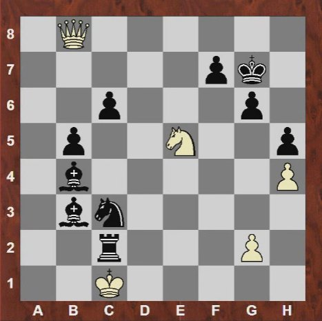
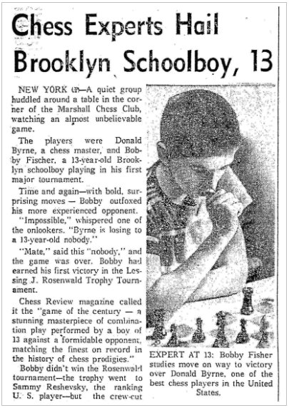

It was none other than one of the greatest players of all time, Bobby Fischer. It was his first adult tournament and he was playing against a former US open champion Donald Byrne. Byrne was a very strong international master at that time and this position arose where Fischer was playing the black pieces and it was his turn to move.

Fischer’s queen is under attack by the white bishop at c5 indicated by the red line. Any amateur chess player would move the queen as it is the strongest piece on the board and much better than a bishop. But the genius of Fischer could see an incredible queen sacrifice to gain a strong attack against the white king!! Fischer played bishop to e6 indicated by the blue line. Donald went on to take the queen, Bxb6. The green lines show the tactics against the white king after Bxb6. The rook on e8 cuts off the e-file so the king cannot move into the e-file. The black bishop which is moved to e6 can now grab the white bishop on c4. And the black knight on c3 can jump into the squares near the white king to attack it. After Donald grabbed the queen by Bxb6, Fischer grabbed the white bishop on c4 with his newly displaced bishop on e6 which led to a check, Bxc4+. The king has to move to g1 and then comes knight to e2 check, Ne2+. This strong attack finally led to a sensational win for Fischer. The following picture shows the final position where the white king is checkmated. If you are interested in the complete game, check the link, Bobby Fischer's most outrageous chess game! - The "Game of the Century"!
At high-level chess, players resign once they sense that they will be checkmated. But Donald Byrne chose to play on until he was checkmated, as respect to Fischer’s skill. The picture below is a paper clip showing Fischer in the match. Incredibly, it was taken when he was pondering over the move for the queen sacrifice.
